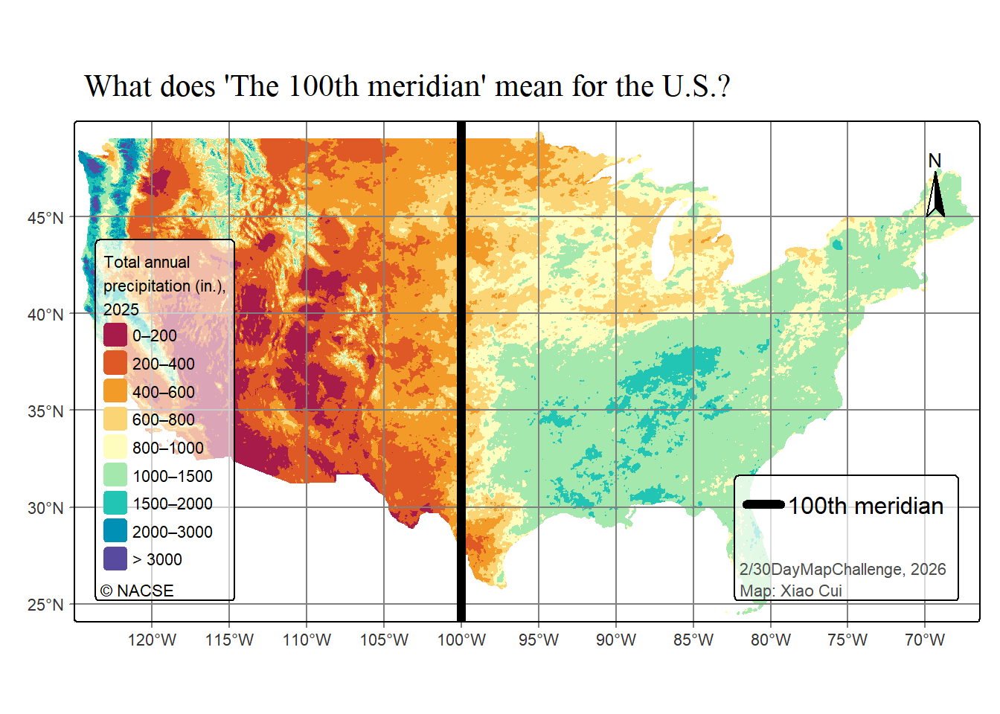
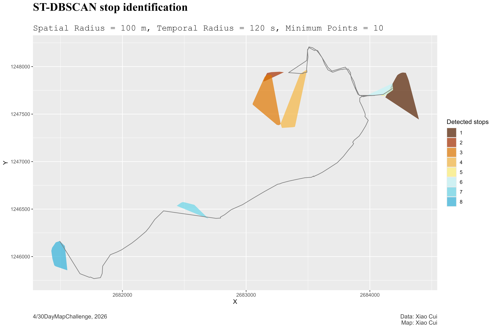

load packages
library(sf)
library(terra)
library(dplyr)
library(mapview)
library(tmap)
library(ggplot2)
library(geogrid)
library(maptiles)
library(raster)library(sf)
library(terra)
library(dplyr)
library(mapview)
library(tmap)
library(ggplot2)
library(geogrid)
library(maptiles)
library(raster)doctors_sf <- base::readRDS("data/doctors_sf.rds")tmap_mode("plot")
tm_basemap("OpenStreetMap") +
tm_title("Number of doctors in the Netherlands \nper province (NUTS2 region) in 2017", fontfamily = "serif")+
tm_shape(doctors_sf) +
tm_polygons(
fill = NA,
col = "grey60",
lwd = 1,
fill_alpha = 0.5
) +
tm_symbols(
size = "Doctors",
shape =19,
fill = "#008B8B",
col = "black",
lwd = 1,
size.scale = tm_scale(values.scale = 3),
fill.legend = tm_legend(position = c("right", "center"))
) +
tm_compass(
type = "arrow",
position = c("left", "top")
) +
tm_scalebar(
position = c("left", "bottom")
) +
tm_credits(
"© Statistics Netherlands (CBS)",size = 0.5,
position = c("left", "bottom"), bg = TRUE
)+
tm_credits(
"\n1/30DayMapChallenge, 2026",size = 0.6,color = "grey30",
position = c("left", "bottom"), bg = TRUE
) +
tm_credits(
"Map: Xiao Cui",color = "grey30",size = 0.6,
position = c("left", "bottom"), bg = TRUE
) +tm_options(component.autoscale = FALSE)
grid_us_sf <- sf::st_read("data/ne_110m_graticules_10.shp")Reading layer `ne_110m_graticules_10' from data source
`D:\Rworkspace\Map30Day_2026\30DayMapChallenge2026_XC\data\ne_110m_graticules_10.shp'
using driver `ESRI Shapefile'
Simple feature collection with 53 features and 5 fields
Geometry type: LINESTRING
Dimension: XY
Bounding box: xmin: -180 ymin: -89.99993 xmax: 180 ymax: 90
Geodetic CRS: WGS 84line_100W_sf <- grid_us_sf |>
dplyr::filter(display == "100 W")
ppt_2025_rs <- terra::rast("data/prism_ppt_us_30s_2025.tif")tmap_mode("plot")
# 1. Define precipitation intervals
my_breaks <- c(
0, 200, 400, 600, 800,
1000, 1500, 2000, 3000, Inf
)
# 2. Define legend labels
my_labels <- c(
"0–200",
"200–400",
"400–600",
"600–800",
"800–1000",
"1000–1500",
"1500–2000",
"2000–3000",
"> 3000"
)
# 3. Define colors
my_cols <- hcl.colors(
length(my_breaks) - 1,
palette = "Spectral",
rev = FALSE
)
# 4. Create map
map_ppt <-
tmap::tm_shape(ppt_2025_rs) +
tm_title("What does 'The 100th meridian' mean for the U.S.?", fontfamily = "serif") +
tmap::tm_raster(
col.scale = tmap::tm_scale_intervals(
style = "fixed",
breaks = my_breaks,
values = my_cols,
labels = my_labels,
interval.closure = "left"
),
col.legend = tmap::tm_legend(
title = "Total annual\nprecipitation (in.),\n2025",
title.size = 0.7,
text.size = 0.7,
bg.color = "white",
bg.alpha = 0.6,
position = tmap::tm_pos_in("left", "bottom"),
frame = TRUE
)
) +
tmap::tm_graticules(
labels.size = 0.7
) +
tmap::tm_compass(
position = tmap::tm_pos_in("right", "top")
) +
tmap::tm_shape(line_100W_sf) +
tmap::tm_lines(
lwd = 6,
col = "black"
) +
# Manually add the 100th meridian legend
tmap::tm_add_legend(
type = "lines",
labels = "100th meridian",
col = "black",
lwd = 6,
title = "",
title.size = 1,
text.size = 1,
bg.color = "white",
bg.alpha = 0.7,
position = tmap::tm_pos_in("right", "bottom"),
frame = TRUE
) +tm_credits(
"© NACSE",size = 0.7,
position = c("left", "bottom"), bg = TRUE
)+
tm_credits(
"\n2/30DayMapChallenge, 2026",size = 0.7,color = "grey30",
position = c("right", "bottom"), bg = TRUE
) +
tm_credits(
"Map: Xiao Cui",color = "grey30",size = 0.7,
position = c("right", "bottom"), bg = TRUE
)+
tmap::tm_layout(
scale = 1.0
)
# Display
map_ppt
cape_sf <- sf::st_read("data/protected-areas.gpkg") |>
dplyr::filter(name == "Cape Rodney-Okakari Point Marine Reserve")Reading layer `protected_areas' from data source
`D:\Rworkspace\Map30Day_2026\30DayMapChallenge2026_XC\data\protected-areas.gpkg'
using driver `GPKG'
Simple feature collection with 606 features and 10 fields
Geometry type: MULTIPOLYGON
Dimension: XY
Bounding box: xmin: 1621756 ymin: 5393867 xmax: 1897807 ymax: 6047519
Projected CRS: NZGD2000 / New Zealand Transverse Mercator 2000tmap_mode("plot")
tm_basemap("Stadia.StamenWatercolor") +
tm_title("Cape Rodney-Okakari Point Marine Reserve and its interior ring", fontfamily = "serif") +
tm_shape(cape_sf) +
tm_polygons(
fill = NA,
col = "grey70",
lwd = 1,
fill_alpha = 0.5
) +
tm_borders(alpha = 0.2) +
tmap::tm_graticules(
labels.size = 0.5, crs = 27200
) +
tm_text(text = "Cape Rodney-Okakari \nPoint Marine Reserve", size = 1, col = "grey20", xmod = 1.2, ymod = 2.2) +tm_credits(
"© LINZ",size = 0.7,
position = c("left", "bottom"), bg = TRUE
)+
tm_credits(
"\n3/30DayMapChallenge, 2026",size = 0.7,color = "grey30",
position = c("left", "bottom"), bg = TRUE
) +
tm_credits(
"Map: Xiao Cui",color = "grey30",size = 0.7,
position = c("left", "bottom"), bg = TRUE
)
ggplot() +
geom_point() +
geom_polygon(data = hull_data, aes(X_lv95, Y_lv95, fill = clust), alpha = 0.7) +
scale_fill_manual(values = MetBrewer::met.brewer("Homer1", 8)) +
geom_path(data = subset_df_mvt, aes(X_lv95, Y_lv95),color="grey50") +
labs(x = "X", y = "Y", fill = "Detected stops",
title = "ST-DBSCAN stop identification",
subtitle = "\nSpatial Radius = 100 m, Temporal Radius = 120 s, Minimum Points = 10",
caption = c("\n4/30DayMapChallenge, 2026", "\nData: Xiao Cui\nMap: Xiao Cui"
)) +
theme(plot.title = element_text(family = "serif", face = "bold", size = 20),
plot.subtitle = element_text(family = "mono", size = 15),
plot.caption = element_text(size = 10, color = "grey20",hjust = c(0, 1)))
point_montmartre_df <- data.frame(
id = 1,
lon = 2.343121,
lat = 48.886452
)
point_montmartre_sf <- sf::st_as_sf(
point_montmartre_df,
coords = c("lon", "lat"),
crs = 4326
)
bg_tiles <- maptiles::get_tiles(x = point_montmartre_sf, provider = "Esri.WorldImagery", zoom = 19)
|---------|---------|---------|---------|
=========================
|---------|---------|---------|---------|
=========================================
|---------|---------|---------|---------|
=========================================
|---------|---------|---------|---------|
=========================================
|---------|---------|---------|---------|
=========================================
|---------|---------|---------|---------|
=========================================
tm_shape(bg_tiles) +
tm_rgb(options = opt_tm_rgb(interpolate = FALSE, saturation = 2)) +
tm_title("Snapshot: Montmartre, Paris", fontfamily = "serif", fontface = "bold") +
tm_graticules(lines = F) +tm_credits(
"© Esri.WorldImagery",size = 0.8,color = "grey10",
position = c("right", "bottom"), bg = TRUE
)+
tm_credits(
"\n5/30DayMapChallenge, 2026",size = 0.6,color = "grey30",
position = c("right", "bottom"), bg = TRUE
) +
tm_credits(
"Map: Xiao Cui",color = "grey30",size = 0.6,
position = c("right", "bottom"), bg = TRUE
) +
tmap::tm_layout(
scale = 1.1
)
ghent_buildings <- base::readRDS("data/ghent_buildings.rds")
ghent_buildings_multi <- base::readRDS("data/ghent_buildings_multi.rds")tmap_mode("plot")
tm_shape(ghent_buildings_multi) +
tm_polygons(fill = "coral4") +
tm_shape(ghent_buildings) +
tm_polygons(
fill = "coral1") +
tmap::tm_grid(labels.show = FALSE
) +
tm_layout(
bg.color = "#f4f1ea", # Cream/off-white stamp paper background
outer.bg.color = "#d9d2c9", # Darker background outside the stamp
frame = TRUE, # Turn on the map frame
frame.lwd = 2, # Thick frame border
frame.color = "#333333", # Dark charcoal border color
frame.double_line = TRUE,
scale = 1.1
) +
tm_title("Imitated Ferraris map: the old city centre of Ghent, Belgium",fontface = "bold",fontfamily = "serif",size = 1.2)+
tm_title("6/30DayMapChallenge, 2026\nMap: Xiao Cui", size = 0.8, color = "grey40",fontfamily = "serif") +
tm_credits(
"© OSM",size = 0.5,color = "grey10",
position = c("right", "bottom"), bg = FALSE,fontfamily = "serif"
) 
South_America <- World[World$continent == "South America", ]
South_America <- South_America |>
dplyr::rename(IncomeGroup = income_grp)tmap_mode("plot")
tm_shape(South_America) +
tm_title("Income Group, South America, 2024", fontfamily = "serif", fontface = "bold") +
tm_polygons(fill = "IncomeGroup", fill.scale = tm_scale_categorical(values = "-brewer.yl_or_br"), fill_alpha = 0.9) +
tm_text("name", size = 0.8, options = opt_tm_text(remove_overlap = FALSE)) +tm_credits(
"© NED",size = 0.8,color = "grey10",
position = c("right", "bottom"), bg = TRUE
)+
tm_credits(
"7/30DayMapChallenge, 2026",size = 0.6,color = "grey30",
position = c("right", "bottom"), bg = TRUE
) +
tm_credits(
"Map: Xiao Cui",color = "grey30",size = 0.6,
position = c("right", "bottom"), bg = TRUE
) +
tmap::tm_layout(
bg.color = "lightblue",scale = 1.1
) +tm_options(component.autoscale = FALSE)
world_union <- sf::st_union(World)tmap_mode("plot")
tm_shape(world_union) +
tm_polygons(fill = "whitesmoke") +
tm_shape(World_rivers) +
tm_lines(lwd = "strokelwd", col = "lightblue",
lwd.scale = tm_scale_asis(values.scale = 0.2)) +
tm_crs("+proj=eck4") +
tm_layout(earth_boundary = TRUE,
earth_boundary.lwd = 2,
legend.show = FALSE, # option to disable all legends
frame = FALSE,
space.color = "white", bg.color = "dodgerblue") +tm_credits(
"© tmap",size = 0.8,color = "grey10",
position = c("right", "bottom"), bg = TRUE) +
tm_title("A Utopia could be a real world without prejudice.", fontfamily = "serif", fontface = "bold") +
tm_title("\n8/30DayMapChallenge, 2026\nMap: Xiao Cui", size = 0.8, color = "grey40",fontfamily = "serif") +
tmap::tm_layout(
scale = 1.1
)